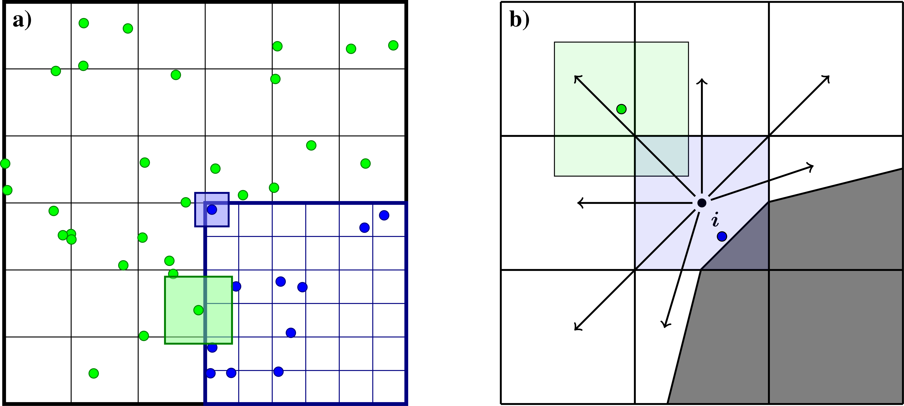
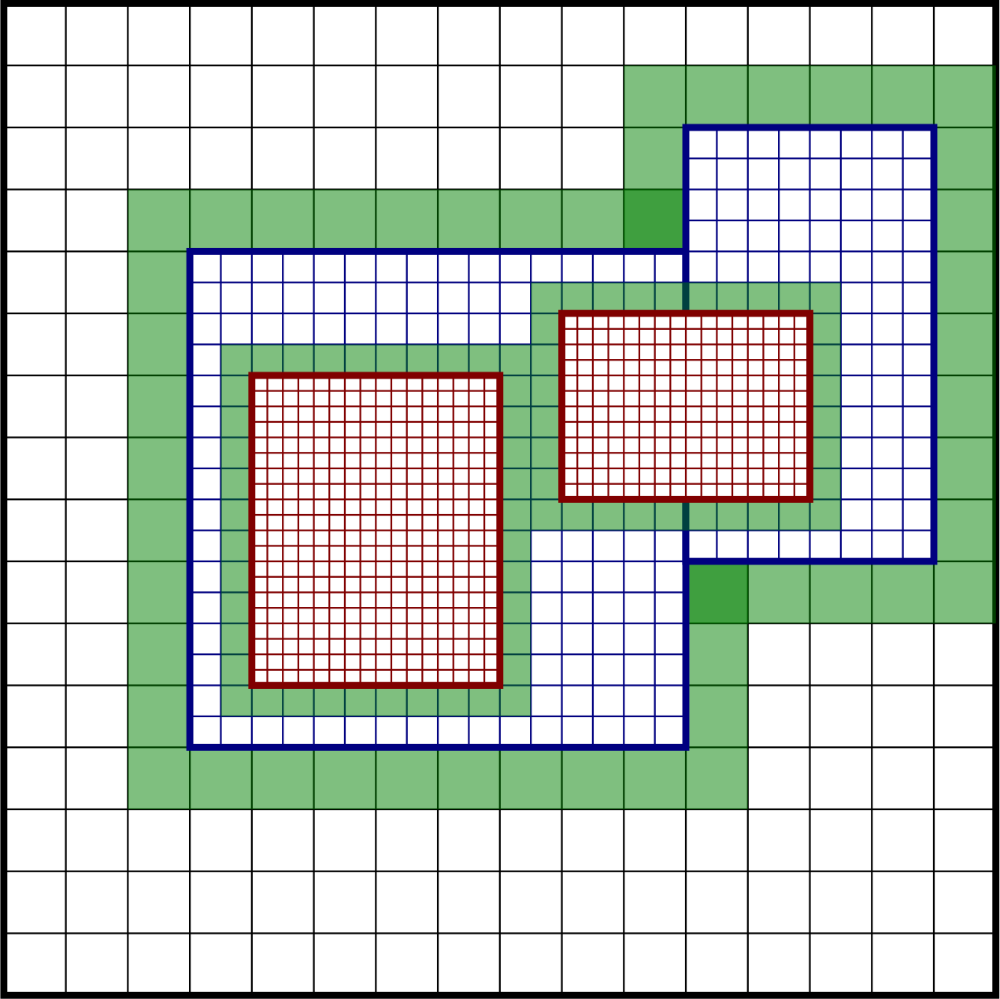
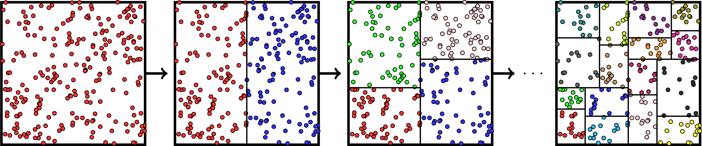
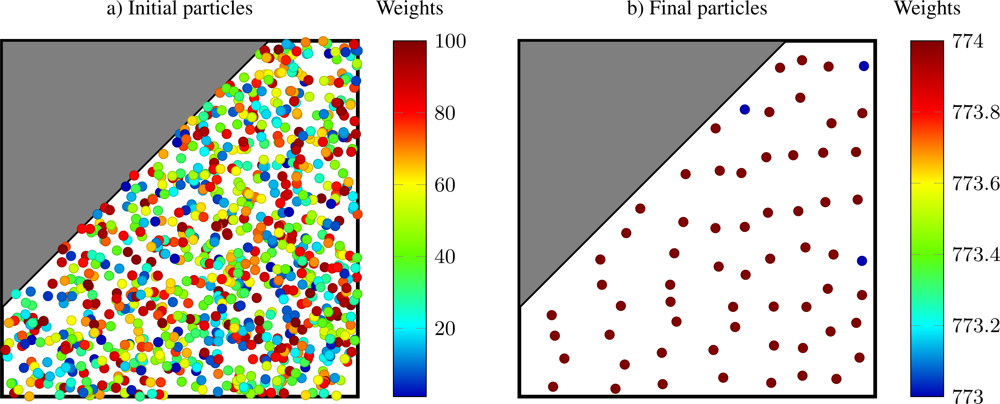

Particles
chombo-discharge stores computational particles in a Struct-of-Arrays (SoA) layout.
The source code for the particle functionality resides in $DISCHARGE_HOME/Source/Particle.
Particle support contains the following basic features:
Particle-mesh operations, i.e., deposition and interpolation of particle variables to/from the mesh.
Particle distribution and remapping with MPI.
Rudimentary particle output to H5Part files.
Particle support is templated on a small user-defined payload struct, so that users can define new particle types that contain a desired set of variables. The particle position, weight, and bookkeeping IDs are always owned by the container; the payload only adds the extra per-particle variables.
ParticleSoA
ParticleSoA<P, Traits> is the per-patch Struct-of-Arrays leaf that holds the particles of one grid patch.
Rather than storing an array of particle objects, it stores one contiguous column per variable.
The columns fall into two groups:
Container-owned columns, present for every particle type: the position (
SpaceDimscalar columns), theweight, and the bookkeepingparticleID/rankID. These are not declared by the user.Payload columns, supplied by the user as a plain struct
Pwhose data members become extra columns.
The payload is described by a ParticleTraits<P> specialization that lists the payload columns as a tuple of member pointers (and, optionally, an h5Columns subset that restricts which columns are written to HDF5 checkpoints).
A representative payload (the tracer-particle velocity + Runge-Kutta scratch) looks like
/**
@brief SoA payload for tracer particles: interpolated velocity plus Runge-Kutta stage scratch.
@details Per-component scalar columns (one member per spatial dimension; the z-component exists only when
CH_SPACEDIM == 3). v_x/v_y/v_z hold the interpolated velocity (required by TracerParticleSolver). xk is the
position snapshot x^k; k1/k2/k3 hold the Runge-Kutta stage velocities. Weight and position are
container-owned columns, NOT payload members.
*/
struct TracerParticle
{
ParticleReal v_x = 0.0; ///< Interpolated velocity, x-component.
ParticleReal v_y = 0.0; ///< Interpolated velocity, y-component.
#if CH_SPACEDIM == 3
ParticleReal v_z = 0.0; ///< Interpolated velocity, z-component.
#endif
double xk_x = 0.0; ///< Position snapshot x^k, x-component (double: position-like).
double xk_y = 0.0; ///< Position snapshot x^k, y-component (double: position-like).
#if CH_SPACEDIM == 3
double xk_z = 0.0; ///< Position snapshot x^k, z-component (double: position-like).
#endif
ParticleReal k1_x = 0.0; ///< Runge-Kutta stage k1, x-component.
ParticleReal k1_y = 0.0; ///< Runge-Kutta stage k1, y-component.
#if CH_SPACEDIM == 3
ParticleReal k1_z = 0.0; ///< Runge-Kutta stage k1, z-component.
#endif
ParticleReal k2_x = 0.0; ///< Runge-Kutta stage k2, x-component.
ParticleReal k2_y = 0.0; ///< Runge-Kutta stage k2, y-component.
#if CH_SPACEDIM == 3
ParticleReal k2_z = 0.0; ///< Runge-Kutta stage k2, z-component.
#endif
ParticleReal k3_x = 0.0; ///< Runge-Kutta stage k3, x-component.
ParticleReal k3_y = 0.0; ///< Runge-Kutta stage k3, y-component.
#if CH_SPACEDIM == 3
ParticleReal k3_z = 0.0; ///< Runge-Kutta stage k3, z-component.
#endif
};
/**
@brief ParticleTraits specialization listing the payload columns of TracerParticle.
*/
template <>
struct ParticleTraits<TracerParticle>
{
/// @brief Payload column member-pointers, listed one field group at a time (SpaceDim entries per group).
static constexpr auto columns = std::make_tuple(
D_DECL(&TracerParticle::v_x, &TracerParticle::v_y, &TracerParticle::v_z),
D_DECL(&TracerParticle::xk_x, &TracerParticle::xk_y, &TracerParticle::xk_z),
D_DECL(&TracerParticle::k1_x, &TracerParticle::k1_y, &TracerParticle::k1_z),
D_DECL(&TracerParticle::k2_x, &TracerParticle::k2_y, &TracerParticle::k2_z),
D_DECL(&TracerParticle::k3_x, &TracerParticle::k3_y, &TracerParticle::k3_z));
};
Per-component vectors are declared as individual scalar columns (there is no RealVect column type); the D_DECL macro expands to the SpaceDim components.
The empty payload NoPayload is provided for particles that only need position and weight.
The most common ParticleSoA<P, Traits> member functions are:
size()– the number of particles in the leaf.position(i)/setPosition(i, x)– get/set the position of particlei.weight(i)– reference to the weight of particlei.get<&P::member>(i)– reference to a payload column entry of particlei.column<&P::member>()– raw base pointer to a whole payload column.append(pos, weight)orappend(pos, weight, payload)– add a particle.remove(i)– delete particlei(O(1) swap-and-pop; does not preserve order).gather(i)– assemble particlei’s payload back into aPvalue.swap/catenate– swap arenas with, or move all particles from, another leaf.
A typical loop over the particles in a leaf uses an integer index and column access:
ParticleSoA<MyPayload> leaf;
for (std::size_t i = 0; i < leaf.size(); i++) {
const RealVect x = leaf.position(i);
const Real w = leaf.weight(i);
// Access a payload column entry:
Real& vx = leaf.get<&MyPayload::vx>(i);
}
Tip
The ParticleSoA C++ API is found at https://chombo-discharge.github.io/chombo-discharge/doxygen/html/classParticleSoA.html.
Checkpoint and HDF5 export
The container-owned position and weight columns are always written to HDF5 checkpoint files.
For particles that do not need to checkpoint all payload columns, the ParticleTraits<P> specialization may declare an h5Columns tuple that lists the payload-column subset to export, which reduces the checkpoint file size.
ParticleContainer
The ParticleContainer<P, Traits> is a template class that
Stores computational particles of type
Pover an AMR hierarchy (oneParticleSoA<P, Traits>leaf per grid patch).Provides infrastructure for remapping particles.
Provides functionality for getting the particles within a specified grid patch.
Provides functionality that is required during regrids.
Other types of functionality, like grouping particles into grid cells, and mask/halo particle extraction.
Data structures
ParticleSoA<P> leaves
At the lowest level the particles in one grid patch are stored in a ParticleSoA<P, Traits> (see ParticleSoA), which holds the particles column-by-column with no ordering unless the leaf has been cell-sorted.
AMRParticlesSoA<P>
On each grid level, ParticleContainer<P, Traits> stores the leaves in a LayoutData<ParticleSoA<P, Traits>> (one leaf per patch).
The AMR view AMRParticlesSoA<P, Traits> is a vector of these per-level holders:
template <typename P, typename Traits>
using AMRParticlesSoA = Vector<RefCountedPtr<LayoutData<ParticleSoA<P, Traits>>>>;
Again, the Vector indicates the AMR level and the LayoutData is a distributed data holder that holds the leaves on each AMR level.
AMRParticlesSoA<P, Traits> always lives within ParticleContainer<P, Traits> and is the class member that actually holds the particles.
Basic usage
Here, we give some examples of basic usage of ParticleContainer.
For the full API, see the ParticleContainer C++ API https://chombo-discharge.github.io/chombo-discharge/doxygen/html/classParticleContainer.html.
Getting the particles
To get the per-level holders from a ParticleContainer<P, Traits> one can call getParticles():
/**
@brief The valid particles on all levels.
@return Mutable per-level holder vector.
*/
AMRParticlesSoA<P, Traits>&
getParticles()
{
return m_particles;
}
Alternatively, one can fetch the distributed leaves of a specified grid level with operator[]:
int lvl;
ParticleContainer<P> myParticleContainer;
LayoutData<ParticleSoA<P>>& levelParticles = myParticleContainer[lvl];
Iterating over particles
To do something with the particles in a ParticleContainer<P, Traits>, one iterates over the grid levels and patches, gets the ParticleSoA leaf for each patch, and loops over the particle indices.
The code bit below shows a typical example of how the particles can be moved, and then remapped onto the correct grid patches and ranks if they fall off their original one.
ParticleContainer<P> myParticleContainer;
// Iterate over grid levels
for (int lvl = 0; lvl <= m_amr->getFinestLevel(); lvl++){
// Get the grid on this level.
const DisjointBoxLayout& dbl = m_amr->getGrids(myParticleContainer.getRealm())[lvl];
// Iterate over grid patches on this level
for (DataIterator dit(dbl); dit.ok(); ++dit){
// Get the SoA leaf in the current patch.
ParticleSoA<P>& leaf = myParticleContainer[lvl][dit()];
// Iterate over the particles in the current patch.
for (std::size_t i = 0; i < leaf.size(); i++){
// Move the particle
leaf.setPosition(i, ...);
}
}
}
// Remap particles onto new patches and ranks (they may have moved off their original ones)
myParticleContainer.remap();
Sorting particles
Sorting by cell
The particles in a leaf can be sorted by cell by calling ParticleContainer<P>::organizeParticlesByCell():
ParticleContainer<P> myParticleContainer;
myParticleContainer.organizeParticlesByCell();
Internally this performs a counting sort of each leaf’s columns into Fortran (x-fastest) cell order and builds a compressed-sparse-row (CSR) offset array.
After the sort, the particles of cell c occupy the contiguous index range [cellStart(c), cellStart(c+1)).
Unlike the AoS-era per-cell containers, the cell-sort does not move the particles into a separate structure – it merely reorders the SoA columns in place.
The relevant ParticleSoA<P, Traits> query functions are isSorted(), numCells(), cellStart(c), particlesInCell(c), and cellRange(c) (which returns the {begin, end} index pair).
Iteration over cell-sorted particles visits the cells in Fortran order (matching the CSR cell index) and then the contiguous index range of each cell:
ParticleContainer<P> myParticleContainer;
myParticleContainer.organizeParticlesByCell();
// Iterate over all AMR levels
for (int lvl = 0; lvl <= m_amr->getFinestLevel(); lvl++){
const DisjointBoxLayout& dbl = m_amr->getGrids(myParticleContainer.getRealm())[lvl];
// Iterate over grid patches on this level
for (DataIterator dit(dbl); dit.ok(); ++dit){
const Box cellBox = dbl[dit()];
ParticleSoA<P>& leaf = myParticleContainer[lvl][dit()];
// Visit cells in Fortran order, matching the CSR cell index.
std::size_t cellIndex = 0;
for (BoxIterator bit(cellBox); bit.ok(); ++bit, ++cellIndex){
const std::pair<std::size_t, std::size_t> range = leaf.cellRange(cellIndex);
for (std::size_t i = range.first; i < range.second; i++){
// Do something with particle i in cell bit().
}
}
}
}
Sorting by patch
To return to patch-ordered particles:
ParticleContainer<P> myParticleContainer;
myParticleContainer.organizeParticlesByPatch();
Important
The CSR cell ranges are only valid while the leaf is sorted.
append and remove invalidate the sort, and remap() requires patch-ordered particles.
Allocating particles
AmrMesh has a simple function for allocating a ParticleContainer<P, Traits>:
/**
@brief Allocate a struct-of-arrays particle container on the given realm.
@param[out] a_container SoA particle container to be allocated.
@param[in] a_realm Realm on which the particles will be allocated.
@tparam P Payload type of the container.
@tparam Traits Column descriptor for the payload.
*/
template <typename P, typename Traits>
void
allocate(ParticleContainer<P, Traits>& a_container, const std::string& a_realm) const;
which will allocate the container on the realm a_realm.
Particle mapping
Particles that move off their original grid patch must be remapped in order to ensure that they are assigned to the correct grid.
The remapping function for ParticleContainer<P, Traits> is
/**
@brief Redistribute every valid particle to the patch/level/rank that owns its cell.
@details Pool model: collect all valid particles, map each to its destination via the
finest-level tile that contains it (LevelTiles), append same-rank movers into the destination
leaf and scatter cross-rank movers with MPI. Particles whose cell is not owned by any tile on
any level (off-domain) are dropped and counted in getNumberOfOutcastParticles*(). Invalidates
any cell-sort. Particle ids are preserved; rankID is set to the new owning rank.
*/
void
remap();
This is simply used as follows:
ParticleContainer<P> myParticles;
myParticles.remap();
During remapping, the following steps are performed for each MPI rank:
Collect all valid particles from this rank.
Map each particle to its destination in the AMR hierarchy (level, grid index, and owning MPI rank).
Append the particles that stay on this rank to their destination leaf.
Scatter the particles that move to another rank with MPI.
Assign the scattered particles on each receiving rank.
Particles whose cell is owned by no patch on any level (off-domain) are dropped and counted.
The point-to-patch mapping in step 2 maps the position to a min_block_size tile by integer division and looks it up in a per-level hash map.
This is \(\mathcal{O}(1)\) and works also when the grids contain variable-sized (anisotropic) boxes (see Mesh generation), because every box is registered under each min_block_size tile it covers.
The same mapping is exposed on the Realm class through Realm::getLevelAndBox (see Patch lookup (tile hash grid)) for non-particle users; the container aliases the realm’s hash grid rather than building its own.
Regridding
As with mesh data, ParticleContainer<P, Traits> requires storing the old-grid particles before assigning them on the new grids.
This is done as follows:
Before creating the new grids, each MPI rank caches its current particles by calling
/** @brief Cache the current valid particles ahead of a regrid. @details Snapshots the current per-level holders (and their layout) so that regrid() can rebuild over a new layout and redistribute the cached particles. Call exactly once before regrid(). */ void preRegrid();
This snapshots the particles off their current grids.
When
ParticleContainer<P, Traits>regrids, the cached particles are redistributed onto the new layout by calling the regrid function:/** @brief Rebuild over a new AMR layout and redistribute the preRegrid()-cached particles onto it. @details Re-allocates the per-level holders and tile maps over the new grids (all levels), then runs the same pool->map->scatter as remap() but sourced from the cache. Positions are unchanged; each cached particle is routed to the patch/level/rank owning its cell on the NEW layout, with ids preserved. Off-domain particles are counted in getNumberOfOutcastParticles*(). Must follow a preRegrid(). @param[in] a_grids New per-level DisjointBoxLayouts. @param[in] a_domains New per-level problem domains. @param[in] a_dx New per-level (isotropic) grid spacing. @param[in] a_refRat New per-level refinement ratios. @param[in] a_minBlockSize Grid blocking factor (tile size) for the new grids. @param[in] a_levelTiles The owning Realm's per-level tile->box maps for the new grids, aliased (never built locally). Must correspond to a_grids. @param[in] a_newFinestLevel New finest AMR level index. */ void regrid(const Vector<DisjointBoxLayout>& a_grids, const Vector<ProblemDomain>& a_domains, const Vector<Real>& a_dx, const Vector<int>& a_refRat, const int a_minBlockSize, const Vector<RefCountedPtr<LevelTiles>>& a_levelTiles, const int a_newFinestLevel);
Warning
One must call preRegrid before the regrid.
Failure to do so will lead to loss of all particles.
Masked particles
ParticleContainer<P, Traits> also supports the concept of masked particles, where one can fetch a subset of particles that live only in specified grid cells.
Typically, this “specified region” is the refinement boundary, but the functionality is generic and might prove useful also in other cases.
This functionality is unlikely to be used directly by users of chombo-discharge, but it is nonetheless fruitful to understand the concept in order to more easily fathom how deposition across refinement boundaries proceeds.
When masked particles are used, the user provides a boolean mask over the AMR hierarchy and obtains the subset of particles that live in regions where the mask evaluates to true.
This functionality is for example used for some of the particle deposition methods in chombo-discharge where we deposit particles that live near the refinement boundary with special deposition functions.
To fill the masked particles, ParticleContainer<P, Traits> has member functions for copying the particles into internal data containers which the user can later fetch.
The function signature for this is
void
copyMaskParticles(const Vector<RefCountedPtr<LevelData<BaseFab<bool>>>>& a_mask);
The argument a_mask holds a bool at each cell in the AMR hierarchy.
Particles that live in cells where a_mask is true will be copied to an internal holder which can be retrieved through
/**
@brief The halo/mask particles on all levels.
@return Mutable per-level holder vector.
*/
AMRParticlesSoA<P, Traits>&
getMaskParticles()
{
return m_maskParticles;
}
In the above functions the mask particles are copied, and the original particles are left untouched. After the user is done with the particles, they should be released through
/**
@brief Drop all mask/halo particles on every level (keeps capacity).
*/
void
clearMaskParticles()
An example pseudocode for working with masked particles is given below:
AmrMask myMask;
ParticleContainer<P> myParticles;
// Copy mask particles
myParticles.copyMaskParticles(myMask);
// Do something with the mask particles
AMRParticlesSoA<P>& maskParticles = myParticles.getMaskParticles();
// Release the mask particles
myParticles.clearMaskParticles();
Boundary interaction
ParticleContainer<P, Traits> is EB-agnostic and has no information about the embedded boundary and only partial information about the domain boundary.
This means the following:
Particles remap just as if the embedded boundary was not there.
Particles that completely fall off the domain are deleted when calling the remapping function.
Interaction with the EB is done via the implicit function or discrete information, as well as modifications in the interpolation and deposition steps.
Signed distance function
When signed distance functions are used, one can always query how far a particle is from a boundary:
ParticleSoA<P>& leaf;
BaseIF distanceFunction;
for (std::size_t i = 0; i < leaf.size(); i++){
const RealVect pos = leaf.position(i);
const Real distanceToBoundary = distanceFunction.value(pos);
}
If the particle is inside the EB then the signed distance function will be positive, and the particle can then be removed from the simulation. The distance function can also be used to detect collisions between particles and the EB. E.g, the intersection point can be computed and the particle can be deposited on the boundary, or bounced off it. See AmrMesh for details on how to obtain the distance function.
Domain edges
By default, the ParticleContainer remapping function will discard particles that fall outside of the domain.
The user can also check if this happens by checking if the particle position is outside the computational domain:
const RealVect pos = leaf.position(i);
const RealVect probLo = m_amr->getProbLo();
const RealVect probHi = m_amr->getProbHi();
bool outside = false;
for (int dir = 0; dir < SpaceDim; dir++) {
if(pos[dir] < probLo[dir] || pos[dir] > probHi[dir]) {
outside = true;
}
}
Particle intersection
It is occasionally useful to catch particles that hit an EB or crossed a domain side. Provided that the payload stores the previous position of the particle (one scalar column per component), one can compute the intersection point between the particle trajectory and the EB or domain sides. Currently, AmrMesh supports two methods for computing this
Using a bisection algorithm with a user-specified step.
Using a ray-casting algorithm.
These algorithms differ in the sense that the bisection approach will check for a particle crossing between two positions \(\mathbf{x}_0\) and \(\mathbf{x}_1\) using a pre-defined tolerance. The ray-casting algorithm will check if the particle can move from \(\mathbf{x}_0\) towards \(\mathbf{x}_1\) by using a variable step along the particle trajectory. This step is selected from the signed distance from the particle position to the EB such that it uses a large step if the particle is far away from the EB. Conversely, if the particle is close to the EB a small step will be used.
The algorithms that intersect the particles are part of AmrMesh, and the ray-casting variant is called as follows:
template <auto... OldPosition, typename P, typename Traits>
void
intersectParticlesRaycastIF(
ParticleContainer<P, Traits>& a_activeParticles,
ParticleContainer<P, Traits>& a_ebParticles,
ParticleContainer<P, Traits>& a_domainParticles,
const phase::which_phase a_phase,
const Real a_tolerance,
const bool a_deleteParticles,
const std::function<void(ParticleSoA<P, Traits>&, std::size_t)>& a_nonDeletionModifier) const noexcept;
The container-owned position holds the trajectory end point, while the start point is read from the payload columns selected by the OldPosition member-pointer pack (SpaceDim members, one per component).
The intersected particles are put into the EB-intersected particles (a_ebParticles) and domain-intersected particles (a_domainParticles).
The user can choose whether or not to remove intersected particles from a_activeParticles by adjusting a_deleteParticles.
The final argument lets the user supply a callback (ParticleSoA&, std::size_t) that modifies particles that were intersected but not deleted (for example to flag the original particle via a payload column).
Both the bisection and ray-casting algorithm have weaknesses.
The bisection algorithm requires a user-supplied step in order to operate efficiently, while the ray-casting algorithm is very slow when the particle is close to the EB and moves tangentially along it.
Future versions of chombo-discharge will likely include more sophisticated algorithms.
Tip
AmrMesh also stores the implicit function on the mesh, which could also be used to resolve particle collisions with the EB/domain.
Particle-mesh
Particle-mesh operations are required when particles interact with the mesh and vice-versa. There are two main operations involved:
Deposition, where particle properties are transferred to the mesh.
Interpolation, where mesh properties are transferred to the particles.
Particle deposition
To deposit the particle weight on the mesh, the user can call AmrMesh::depositWeight:
template <typename P, typename Traits>
void
depositWeight(EBAMRCellData& a_meshData,
const std::string& a_realm,
const phase::which_phase& a_phase,
const ParticleContainer<P, Traits>& a_particles,
const DepositionType a_depositionType,
const CoarseFineDeposition a_coarseFineDeposition,
const bool a_forceIrregNGP);
The input arguments are the output mesh data holder (must have exactly one component), the realm and phase where the particles live, the SoA particle container (a_particles), the deposition method, the coarse-fine handling, and a flag that enforces nearest grid-point deposition in cut-cells.
The last flag is motivated by the fact that some applications might require hard mass conservation, and the user can then ensure that mass is never deposited into covered grid cells.
To deposit a derived per-particle quantity (e.g. weight times a payload column), use AmrMesh::depositGathered with a gatherer callback, or AmrMesh::depositParticles<Members...> to deposit one or more payload columns directly.
Surface (EB) deposition of the weight column onto an EBAMRIVData is available through an overload of AmrMesh::depositParticles:
template <typename P, typename Traits>
void
depositParticles(EBAMRIVData& a_meshData,
const std::string& a_realm,
const phase::which_phase& a_phase,
const ParticleContainer<P, Traits>& a_particles) const noexcept;
The input argument a_depositionType indicates the deposition method, while a_coarseFineDeposition selects deposition modifications near refinement boundaries.
These are discussed below.
Base deposition
The base deposition scheme is specified by an enum DepositionType with valid values:
DepositionType::NGP(Nearest grid-point).DepositionType::CIC(Cloud-In-Cell).DepositionType::TSC(Triangle-Shaped Cloud).
chombo-discharge supports all of the above methods, which can be combined with various types of modifications near refinement boundaries.
Coarse-fine deposition
The input argument a_coarseFineDeposition determines how deposition near the coarse-fine boundary is handled.
Refinement boundaries introduce additional complications in the deposition scheme due to
Fine-grid particles whose deposition clouds hang over the refinement boundary and onto the coarse level.
Coarse-grid particles whose deposition clouds stick underneath the fine-level.
In addition, there can be complications near physical boundaries, such as domain or embedded boundaries.
{kind=link}

Fig. 11 Sketch of deposition schemes near refinement boundaries and cut-cells.
chombo-discharge supports various ways of handling deposition across the refinement boundary.
In all of these methods, the mass on the fine grid particles whose deposition clouds hang over the refinement boundaries is simply added to the coarse grid.
The main modifications to the deposition scheme are performed for the coarse-grid particles that live around the refinement boundary (see Fig. 12).
For the coarse-grid particles the following processes then occur:
{kind=link}

Fig. 12 Example regions containing coarse-grid particles that deposit with custom deposition rules.
The following coarse-fine deposition methods are currently supported:
CoarseFineDeposition::InterpThis method permits the coarse-grid particles to deposit into the region underneath the fine grid. The deposited mass that falls underneath the fine grid is then interpolated from the coarse grid to the fine grid. For example, see the indicated coarse-grid particle cloud in the left panel Fig. 11. While this particle has a width given by the coarse-grid cell size, it will deposit into the coarse grid cells underneath the fine grid. The mass that ends up in these cells is interpolated to the fine grid, which in this case will inject mass into two layers of fine-grid cells.CoarseFineDeposition::HaloThis method extracts the coarse-grid particles that live on the refinement boundary and deposit them with their original width on both the coarse and fine levels. This is done by first depositing the particles on the coarse level, and then transferring them to the fine level and redepositing them there with the original particle width. Taking the left panel in Fig. 11 as an example, the green particle will then deposit into the coarse-grid cell as well as the first layer of fine-grid cells.CoarseFineDeposition::HaloNGPSimilar toCoarseFineDeposition::Halodiscussed above, this method also extracts the coarse-grid particles on the coarse side of the refinement boundary. However, rather than using the original deposition scheme, these particles are deposited with an NGP scheme.CoarseFineDeposition::TransitionThis is a method that was developed in order to minimize spurious gradients in the density across the EB. This method operates by extracting the coarse-grid particles that live around the refinement zone (within some radius), and depositing them with the fine-grid particle width.
Important
Most coarse-fine particle deposition schemes exhibit some artifacts around the refinement boundary, especially when the particle width exceeds the grid cell size (e.g., for TSC).
The CoarseFineDeposition::Transition method is the one that we recommend, especially when used with CIC, as it eliminates spurious gradients across the refinement boundary.
Particle interpolation
To interpolate mesh data onto a payload column, the user can call AmrMesh::interpolateParticles:
template <auto... Members, typename P, typename Traits>
void
interpolateParticles(ParticleContainer<P, Traits>& a_particles,
const std::string& a_realm,
const phase::which_phase& a_phase,
const EBAMRCellData& a_meshField,
const DepositionType a_interpType,
const bool a_forceIrregNGP) const;
The template parameter Members is a pack of payload member pointers selecting the target column(s): a single scalar column, or SpaceDim columns for a vector quantity.
For example, to interpolate a vector velocity stored as vx/vy/vz payload columns,
RefCountedPtr<AmrMesh> amr;
amr->interpolateParticles<D_DECL(&MyPayload::vx, &MyPayload::vy, &MyPayload::vz)>(...);
The companion AmrMesh::interpolateWeight interpolates a scalar mesh field onto the container-owned weight column.
Note
If interpolating onto a scalar column, the mesh variable must have exactly one component.
Likewise, if interpolating a vector quantity (SpaceDim columns), the mesh variable must have SpaceDim components.
Particle visualization
Note
Particle visualization is currently a work in progress with limited functionality.
Simple particle visualization can be performed by writing H5Part compatible files which can be read by VisIt.
This is done through the function writeH5Part in the DischargeIO namespace, with the following signature:
template <typename P, typename Traits>
void
writeH5Part(std::string a_filename,
const ParticleContainer<P, Traits>& a_particles,
std::vector<std::pair<std::string, H5PartScalar<P, Traits>>> a_scalarVars,
std::vector<std::pair<std::string, H5PartVect<P, Traits>>> a_vectorVars,
RealVect a_shift,
Real a_time) noexcept;
This routine permits particles to be written (in parallel, when using MPI) into a file readable by VisIt.
The container-owned position, id, and weight are written automatically.
The a_scalarVars and a_vectorVars arguments are lists of (name, accessor) pairs, where each accessor is a callable (const ParticleSoA<P>&, std::size_t) -> Real (scalar) or -> RealVect (vector); this lets the caller name and select exactly which payload quantities to export (each vector dataset is written as name-x/name-y/name-z).
The argument a_shift will simply shift the particle positions in the output HDF5 file.
Superparticles
Often, merging or splitting of particles is required.
The recommended pattern operates on one cell at a time: cell-sort the leaf, extract a cell’s particles into a small scratch ParticleSoA, merge/split them, and rebuild the leaf.
ParticleSoA<P>::extractCell performs the per-cell extraction
void
extractCell(const std::size_t a_cell, ParticleSoA& a_out) const
{
CH_assert(m_sorted);
a_out.clear();
const std::pair<std::size_t, std::size_t> range = this->cellRange(a_cell);
for (std::size_t i = range.first; i < range.second; i++) {
a_out.appendParticle(*this, i);
}
}
and the merged result is accumulated into an output ParticleSoA (via append) which finally replaces the leaf with swap.
A complete worked example is ItoSolver::makeSuperparticles in $DISCHARGE_HOME/Source/ItoDiffusion/CD_ItoSolver.cpp.
chombo-discharge supports four merger strategies, all implemented as factory functions in ParticleManagement that return a ParticleMerger<P, Traits> functor.
Each factory accepts user-supplied lambdas for the particle-type-specific gather, reduce, and scatter steps, so the same algorithm can be reused with any ParticleSoA payload type.
kD-trees
chombo-discharge has functionality for spatially partitioning particles using kD-trees, which can be used as a basis for particle merging and splitting.
kD-trees operate by partitioning a set of input primitives into spatially coherent subsets.
At each level in the tree recursion one chooses an axis for partitioning one subset into two new subsets, and the recursion continues until the partitioning is complete.
Fig. 13 shows an example where a set of initial particles are partitioned using such a tree.
{kind=link}

Fig. 13 Example of a kD-tree partitioning of particles in a single cell.
Tip
The source code for the kD-tree partitioner is given in $DISCHARGE_HOME/Source/Particle/CD_ParticleManagement.H (ParticleManagement::buildEqualWeightKDLeaves).
The kD-tree partitioner operates on a lightweight, communication-free particle type (NonCommParticle) carrying the position, weight, and any quantities to be preserved across a merge.
The partitioner buildEqualWeightKDLeaves recursively bisects the input particles into spatially coherent leaves whose weights are as equal as possible – at each bisection the two halves differ by at most one physical particle.
It returns the leaf particle ranges directly; the tree is built in a flat, reusable scratch buffer rather than as linked node objects.
Warning
buildEqualWeightKDLeaves will usually split particles to ensure that the weight in the two subsets are the same (thus creating new particles).
In this case any other members in the particle type are copied over into the new particles.
The particles in each leaf of the kD-tree can then be merged into new particles. Since the weight in the nodes of the tree differ by at most one, the resulting computational particles also have weights that differ by at most one.
{kind=link}

Fig. 14 kD-tree partitioning of particles into new particles whose weight differ by at most one. Left: Original particles with weights between 1 and 100. Right: Merged particles.
KD-tree merging (equal_weight_kd)
ParticleManagement::makeEqualWeightKDMerger wraps buildEqualWeightKDLeaves into a ParticleMerger functor.
The caller provides three lambdas:
A gather function that packs one SoA slot into a
NonCommParticle.A reconcile function (
BinaryParticleReconcile) that propagates payload fields to both daughter particles when the median particle is split across a KD boundary.A scatter-leaf function that receives the raw
[first, last)pointer range of one leaf and appends exactly one merged particle to the SoA.
template <class Packed,
Real& (Packed::*packWeight)(),
const RealVect& (Packed::*packPosition)() const,
class P,
class Traits = ParticleTraits<P>>
inline ParticleMerger<P, Traits>
makeEqualWeightKDMerger(
std::function<Packed(const ParticleSoA<P, Traits>&, std::size_t)> a_gather,
BinaryParticleReconcile<Packed> a_reconcile,
std::function<void(ParticleSoA<P, Traits>&, const Packed*, const Packed*, const CellInfo&)> a_scatterLeaf) noexcept;
In the weighted-centroid variant (equal_weight_kd in ItoSolver), the scatter-leaf computes the weight-averaged position and energy over all particles in the leaf.
Particle weights need not be integers, but buildEqualWeightKDLeaves may create new particles at the KD boundaries (see warning above), so the total computational-particle count may exceed the target by a small amount during the build before being reduced.
KD-tree with reinitialization (reinitialize_bvh)
The reinitialize_bvh variant uses the same makeEqualWeightKDMerger factory and the same KD partition, but replaces the centroid scatter with a position-reinitialising scatter:
Cut-cells (
volFrac < 1): the weighted centroid is used to keep the merged particle inside the embedded boundary.Full cells: a random point is drawn uniformly from the bounding box of the leaf, reinitialising the spatial distribution within each KD partition rather than collapsing it to a single point.
This avoids accumulating all merged particles at a cluster of centroid positions in full cells, at the cost of discarding the fine-scale spatial information within each leaf.
Note
In the full-cell branch, energy is accumulated over the leaf but is not normalised by weight – the stored value is the total (not average) energy of the leaf.
This is intentional and matches the original ItoSolver behaviour.
Reinitialization (reinitialize)
ParticleManagement::makeReinitializeMerger discards all spatial information and rebuilds the cell from scratch.
*/
template <class Context, class P, class Traits = ParticleTraits<P>>
inline ParticleMerger<P, Traits>
makeReinitializeMerger(
std::function<std::pair<long long, Context>(const ParticleSoA<P, Traits>&)> a_aggregate,
std::function<void(ParticleSoA<P, Traits>&, const RealVect&, long long, const Context&)> a_emit,
The returned functor proceeds as follows:
Calls aggregate once on the input SoA to obtain the total physical-particle count and a caller-defined context (e.g. the weight-averaged energy).
Passes the physical count to
partitionParticleWeights, which divides it into at mostppcinteger weights differing by at most one.For each weight, draws a random position in the cell via
Random::randomPosition(cut-cell aware) and calls emit to append the new particle.
All output particles share the same aggregated context, so per-particle information (e.g. individual energies) is lost. This method requires that particle weights are (close to) integers.
Tip
makeReinitializeMerger captures probLo at parse time.
The cell-centre position is computed internally as probLo + dx * (gridIndex + 0.5), so no grid pointer needs to be retained in the returned functor.
SFC nearest-neighbour merging (sfc_nn)
ParticleManagement::makeSfcNearestNeighborMerger sorts particles along a Hilbert space-filling curve and merges adjacent pairs until the count is at most ppc.
template <class Packed,
Real& (Packed::*packWeight)(),
const RealVect& (Packed::*packPosition)() const,
class P,
class Traits = ParticleTraits<P>>
inline ParticleMerger<P, Traits>
makeSfcNearestNeighborMerger(std::function<Packed(const ParticleSoA<P, Traits>&, std::size_t)> a_gather,
std::function<void(Packed&, const Packed&)> a_combine,
std::function<void(ParticleSoA<P, Traits>&, const Packed&)> a_scatter) noexcept;
The caller provides three lambdas:
A gather function that packs one SoA slot into a
NonCommParticle.A combine function that merges two adjacent intermediates in place (typically a weighted average of position and energy).
A scatter function that unpacks one merged intermediate back into the SoA.
Unlike the KD-tree methods, SFC merging does not require integer weights.
Particle counts below ppc are handled by splitting the heaviest particle: its weight is halved and a copy is appended, repeating until the target is reached (only if the heaviest particle has weight \(\geq 2\)).
The Hilbert ordering ensures that merged pairs are spatially close, which better preserves spatial correlations than random pairing and typically produces smoother merged distributions than the KD centroid.
Tip
The source code for all merger factories is in $DISCHARGE_HOME/Source/Particle/CD_ParticleManagement.H.